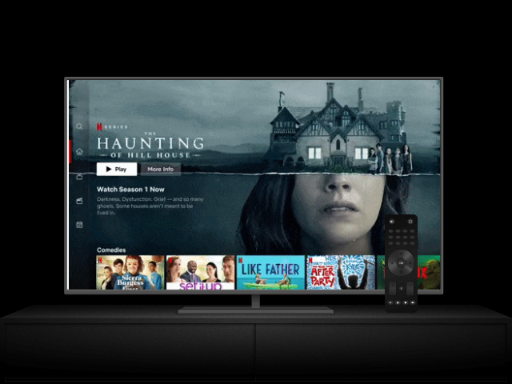
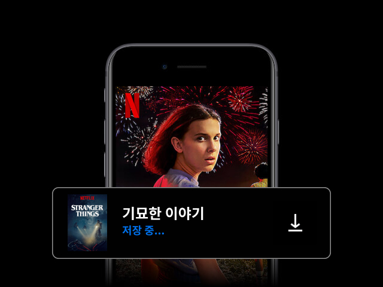
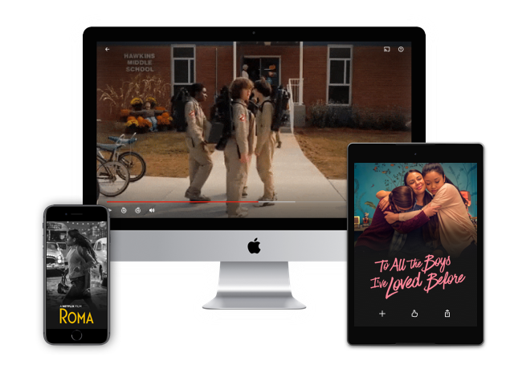

TV로 즐기세요.
스마트 TV, PlayStation, Xbox, Chromecast, Apple TV, 블루레이 플레이어 등 다양한 디바이스에서 시청하세요.

즐겨 보는 콘텐츠를 저장해 오프라인으로 시청하세요.
간편하게 저장하고 빈틈없이 즐겨보세요.

다양한 디바이스에서 시청하세요.
각종 영화와 TV프로그램을 스마트폰, 태블릿, 노트북, TV에서 무제한으로 스트리밍하세요. 추가 요금이 전혀 없습니다.
